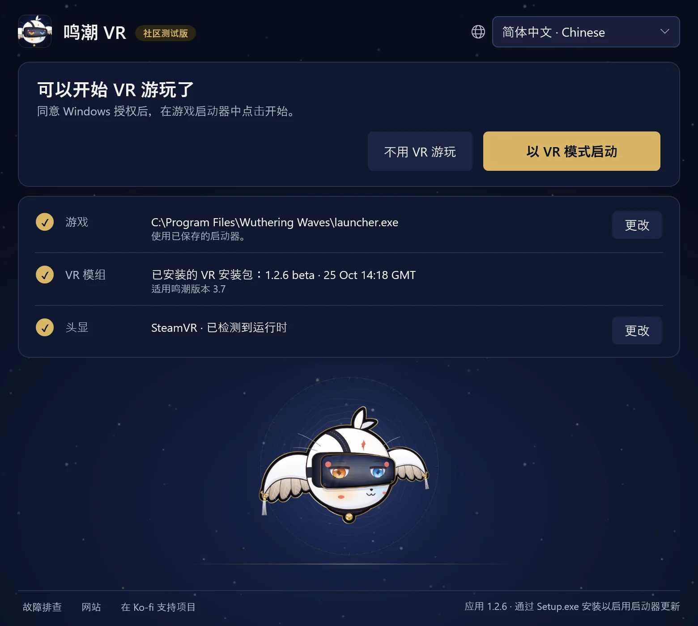

指南1.2.7 玩家指南 · 《鸣潮》 3.8 · Windows PC VR
在 VR 中游玩《鸣潮》
先安装 WuWa-VR-Setup.exe，再打开 WuWa VR 的快捷方式。无需单独安装 Python。首次安装 VR 安装包时需要联网，而 Setup 的小型下载文件仅包含启动器应用本身。
安装与启动
启动器只有一个界面。标题告诉你下一步该做什么；下方是以 VR 模式启动、不用 VR 游玩，以及三行：游戏、VR 模组和头显。你的选择会被记住，之后可以直接点击以 VR 模式启动。
- 游戏显示找到的 Steam 版或官方 Kuro 启动器版。选择更改可以换成其他安装；如果是 Steam，请选择
Wuthering Waves.exe，而不是其内部的 Shipping 可执行文件。暂不支持 Epic。 - VR 模组显示已安装的安装包及其适配的游戏版本。第一次使用时，请阅读账号风险提示，然后选择安装 VR。安装包会在安装前进行校验，安装不会启动游戏。
- 头显显示当前使用的 OpenXR 运行时，所以请先启动头显软件。更改会展开使用头显和使用内置模拟器（桌面预览）。切换可能会请求 Windows 权限，并且需要先关闭游戏及其注入器；打开、安装或更新启动器本身绝不会自动切换。
Launcher app 指的是这款桌面启动器。VR package 指的是模组及其配套工具。更新其中一项并不会自动更新另一项。


选择以 VR 模式启动。启动过程中会依次点亮四个步骤：授权（在 Windows 弹窗中选择“是”）、点击开始（在 Kuro 启动器中；Steam 会自动启动游戏）、启动 VR（通常不到一分钟）和已进入 VR。
进入 VR 后，启动器会显示可以关闭此窗口，VR 会继续运行。如果启动 VR 比平时慢，它会告诉你并显示详细信息。停止等待会取消等待，但不会关闭游戏。
不用 VR 游玩会正常启动同一份游戏，不加载模组。
日常操作
《鸣潮》 VR 中最常用的操作方式是 Xbox / XInput 手柄。L3 / R3 分别表示按下左摇杆、右摇杆。如果不确定按键功能：按住 L3，或同时按住 LT + RT 半秒，你的视野下方就会弹出一张按键提示卡，按下对应按键时该按键会高亮显示。两次快捷键之间请先松开按键。下面的表格按提示卡分组列出全部快捷键。

- LT空间窗口
- LBHUD／鼠标模式
- View第一人称
- 十字键 ↓第一人称：完整动画
- RT微缩景观（10 倍）
- RB游戏／固定镜头
- Menu保持此卡片打开
- Y/X镜头上／下
- B显示／隐藏游戏界面
- A重新居中视角
- R3WuWa VR 菜单
手势操作
- R3×2自由镜头
- L3×2截图
- LT+RT→R3点击：完整 VR / 立体屏幕
- LT+RT→R30.8 s按住：开关单目影院
- LT+RT→L3点击：开关模糊
- LT+RT→Y按下：隐藏眼前的角色
chronohaxx.github.io/wuwa-vr
PlayStation 支持仍为实验功能。
全部快捷键
按住 L3
| L3+LT | 空间窗口 |
|---|---|
| L3+LB | HUD／鼠标模式 |
| L3+View | 第一人称 |
| L3+十字键下 | 第一人称：完整动画 |
| L3+RT | 微缩景观（10 倍） |
| L3+RB | 游戏／固定镜头 |
| L3+Menu | 保持此卡片打开 |
| L3+Y/X | 镜头上／下 |
| L3+Y/X | 剧情镜头：靠近／后退 |
| L3+Y+X | Y + X 同时按：恢复默认 |
| L3+B | 显示／隐藏游戏界面 |
| L3+A | 重新居中视角 |
| L3+R3 | WuWa VR 菜单 |
| R3×2 | 自由镜头 |
| L3×2 | 截图 |
按住 LT + RT
| LT+RT→R3 | 点击：完整 VR / 立体屏幕 |
|---|---|
| LT+RT→R30.8 s | 按住：开关单目影院 |
| LT+RT→L3 | 点击：开关模糊 |
| LT+RT→L30.8 s | 开关立体屏幕（按住 0.8 秒） |
| LT+RT→Y | 按下：隐藏眼前的角色 |
镜头
| LB+LT/RT | 固定镜头：远／近 |
|---|---|
| 按住 RB | Polar 步行开启时全速 |
| 自由镜头开启时 R3×2 | |
| 左／右摇杆 | 自由镜头：移动／观察 |
| LT/LB | 自由镜头：上升／下降 |
| RT／双击 RT | 自由镜头：加速／极速 |
菜单与 HUD
| LB+R3 | 按一次 V；按住 0.8 秒打开 Tab 轮盘 |
|---|---|
| HUD／鼠标模式开启时 L3+LB | |
| 左摇杆 | 移动指针 |
| A/B | 点击／返回 |
| X＋左摇杆 | 滚动 |
| 十字键 | 移动地图 |
| LT/RT | HUD 拉近／推远 |
| LB/RB | HUD 降低／升高 |
WuWa VR 菜单
| L3+R3 | 打开／关闭 WuWa VR 菜单 |
|---|---|
| WuWa VR 菜单打开时 L3+R3 | |
| 十字键 / A / B | 选择／确认／返回 |
| LB/RB | 切换页面 |
| Y | 移动菜单 |
键盘与鼠标
| VR 键 | 按住 1 左边的键，再按一个键 |
|---|---|
| VR 键+1 | 完整 VR／立体屏幕 |
| VR 键+2 | 单目影院 |
| VR 键+3 | 空间窗口 |
| VR 键+4 | 微缩景观（10 倍） |
| VR 键+B | 模糊（景深） |
| VR 键+N | 隐藏眼前的角色 |
| VR 键+H | 显示／隐藏游戏界面 |
| VR 键+R | 重新居中视角 |
| VR 键+P | 截图 |
| VR 键+F | 第一人称 |
| VR 键+T | 游戏／固定镜头 |
| VR 键+C | 自由镜头 |
| VR 键+G | 第一人称：完整动画 |
| VR 键+E/Q | 镜头上／下 |
| VR 键+E+Q | E + Q 同时按：恢复默认 |
| VR 键+滚轮 | 固定镜头：拉近／拉远 |
| VR 键+M | HUD／鼠标模式 |
| VR 键+K | 保持此卡片打开 |
| Insert | 打开／关闭 WuWa VR 菜单 |
| 自由镜头开启时 VR 键+C | |
| WASD/鼠标 | 自由镜头：移动／观察 |
| 空格/Ctrl | 自由镜头：上升／下降 |
| Shift/Shift×2 | 自由镜头：加速／极速 |
键盘和鼠标：Insert 键可打开或关闭菜单。在完整 VR 中，游戏菜单上会显示一个箭头标出鼠标位置；使用手柄时它会隐藏。游戏窗口在前台时，鼠标会被限制在窗口内；菜单舒适页面中的鼠标限制在游戏窗口内可以关闭此功能。
PS4 / PS5：通过 Steam Input 或另一个可用的 Xbox / XInput 映射，即可使用相同的快捷键。Cross / Circle / Square / Triangle 分别对应 A / B / X / Y，L1 / R1 对应 LB / RB，L2 / R2 对应 LT / RT，Share / Create 是 View，Options 是 Menu。当没有 XInput 手柄处于活动状态时，实验性的 DualShock 4 和 DualSense 直接输入也可使用，但游戏可能会对相同的按键做出反应。参见完整参考。
WuWa VR 菜单的视图页面包含镜头模式、模糊和特写选项。自动电影屏幕默认开启：剧情视频会切换到单眼影院，剧情图片切换到立体屏幕，之后恢复你原来的视角；对话保持你选择的视角。切换视角的快捷键随时可用。
可选的 VR 手柄行走、微缩景观与手部演示
VR 手柄（主页和操作页面）可让 Quest 手柄充当 Xbox 手柄，用于行走和观光。每次启动时它们默认关闭。按住左 Menu键 1 秒即可开启或关闭（会有一次震动确认）；快速按一下仍然是 Start。对于没有 Menu 键的手柄（Index），在它们关闭时同时按住两个摇杆按压并保持 1 秒。使用 VR 手柄时，卡片上会标注握把、扳机和摇杆的名称。
与 Xbox / 跑步机共用会被记住：同时使用（默认；跑步机行走仍可正常工作）、以最后使用为准，或仅 VR。手柄槽位默认为自动：它会使用接有手柄的槽位，例如 Reality Runner 的虚拟手柄。两者都在 WuWa VR 菜单的操作页面，旁边还有跑步机跑步：打开 Reality Runner 时，行走会开始一次跑步，为你计时并保存你在游戏中的路线。参见行走参考。
微缩景观需要原生立体（Native Stereo），会随世界缩放放大头部运动；关闭后即可恢复正常缩放。镜头页面上的微缩比例可设置大小（2× 到 10×）。手部 / 手指演示仅是可视化展示，不包含抓取或手势。
更新与回退
应用有新版本时，启动器会提示你：更新后，在没有任务运行时重启即可。若启动应用时游戏已关闭，它会自动安装适用于同一游戏版本的更新 VR 安装包；原来的安装包仍会保留。故障排查 → 更多选项列出已安装和已发布的版本，并提供检查更新。更新检查失败或缓存列表，并不代表你的安装包已是最新。
本版本对应的启动器应用为 1.2.7，VR 安装包为 beta-1-2-7，适配《鸣潮》 3.8。若要回退 VR 安装包更新，请先关闭游戏，然后在故障排查 → 更多选项中使用使用上一个已安装版本。此操作不会回退启动器应用。设置、备份和录制文件都会保留。
如果应用更新受阻，请使用网站上的最新设置。重新安装不会停止卡住的后台工作进程；请先执行下方的恢复步骤。
便携版备用方案
从 对应的 GitHub 发布页 下载 WuWa-VR-Launcher.zip，将其完整解压后直接打开 WuWa VR Launcher.exe。请确保所有解压后的文件夹都保存在同一目录下。该便携版会打开独立的网页工具界面，不会更新已安装的桌面启动器。
如果出现问题
打开启动器底部的故障排查，从上往下尝试其中的修复。修复模组文件会从已校验的副本重新安装模组文件，并保留你的设置。重置模组设置会先备份你的设置，再把模组设置恢复为发布时的状态。保存问题报告会把日志和设置打包成一个 zip 放到桌面，不含你的 Windows 用户名：求助时把它发出来。
更多选项里是其余功能：手柄检查、检查启动条件、复制诊断信息、打开设置文件夹、已安装的版本、卡住的启动器进程和准备卸载。
- 启动卡住：使用停止等待，并给它最多四秒。如果启动器无法确认启动已停止，它会提供卡住的启动器进程：选择查找卡住的启动器进程，只选中你想停止的工作进程，然后确认停止所选进程。默认不会预先选中任何进程。接着选择重试连接。
- 无法关闭：仅关闭启动器会关闭窗口，不干扰后台工作。恢复操作绝不会停止 WuWa、Steam、注入器或 VR 运行时。
- 手柄缺失：手柄检查会读取 XInput 插槽和 HidHide 信息，但不会更改设置。已连接的插槽并不代表游戏能接收到按键。
- HUD 或菜单显示不对：WuWa VR 菜单的 界面页面有刷新 HUD 布局；打开再关闭 ESC 也会重新排布 HUD。HUD 和菜单使用平面游戏的 16:9 布局；同一页面的16:9 界面布局可切换回旧的较高布局。L3 + B 会再次显示被隐藏的游戏界面。
- 菜单不见了：无论菜单设置如何，Ctrl+Shift+Home 会打开 WuWa VR 菜单，Ctrl+Shift+End 会打开经典 UEVR 窗口。
- 反馈问题：在 WuWa VR 菜单的录制页面中，选择出了什么问题并选择保存报告；在启动器中使用保存问题报告。请附上应用和 VR 安装包的版本、发生了什么，以及一段录制视频（如果有），并附在一个 issue 中。
移除已下载的版本或卸载
故障排查 → 更多选项 → 准备卸载会先把你的 UEVR 设置恢复为使用模组之前的状态（模组的设置会先备份），然后在你确认后、没有任务运行时移除已校验的下载文件。之后在 Windows 设置 → 应用中卸载本应用。游戏、备份、录像、当前使用的 OpenXR 安装包，以及正被占用或未校验的文件都会保留。重新安装并不会停止卡住的后台工作进程。
录制与当前限制
可以在 WuWa VR 菜单（录制视频）或故障排查 → 更多选项中的开发工具开始和停止录制。录制支持 SteamVR 和内置模拟器，不支持 VDXR；使用 SteamVR 时还能录下游戏声音和麦克风。录制期间会遮挡玩家 ID。分享前请检查视频中是否包含姓名和账号信息。参见反馈指南。
本次发布测试了哪些内容以及已知限制，见版本说明。已知问题包括：完整 VR 中任务标记略低于目标、角色界面的图标较扁（该界面使用较高布局，以便地面倒影保持实时）、平面菜单背景会移动，以及长时间的场景或对话卡顿。单眼影院对部分菜单和过场动画有帮助。